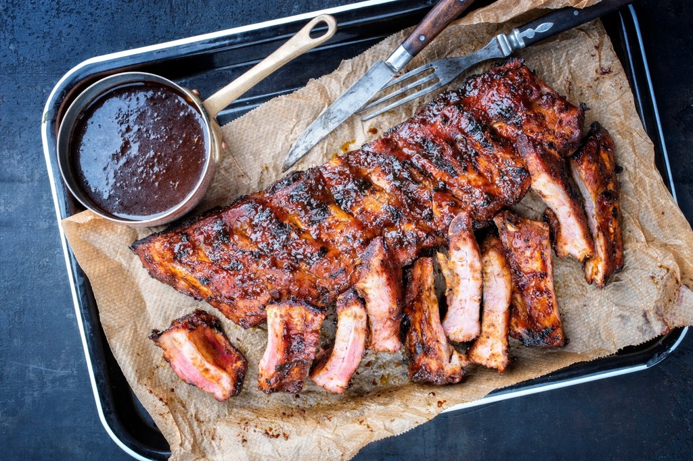

Spareribs

Description
The sweet, tangy sauce on these ribs--with honey, sherry, ginger and soy sauce--will make these spareribs a new family favorite.
Ingredients
- 4 pounds pork spareribs
- 1/2 cup Kikkoman Soy sauce
- 1/3 cup honey
- 1/4 cup dry sherry
- 1 clove garlic, crushed
- 1/4 teaspoon ground ginger
Steps
- Cut ribs into serving pieces; place in shallow, foil-lined pan, meaty side down.
- Combine remaining ingredients; brush ribs thoroughly with sauce.
- Cover and bake at 350 degrees F. 1 hour.
- Turn ribs over, pour remaining sauce over ribs and brush with sauce. Bake, uncovered, 30 minutes longer; brush occasionally.